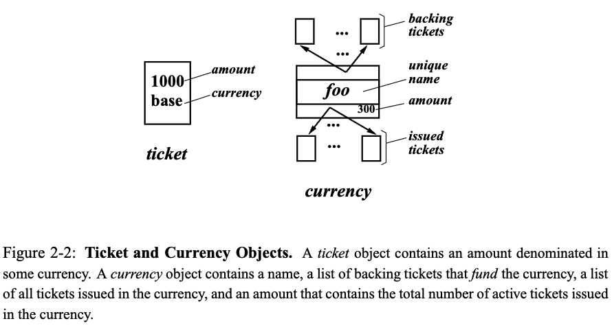
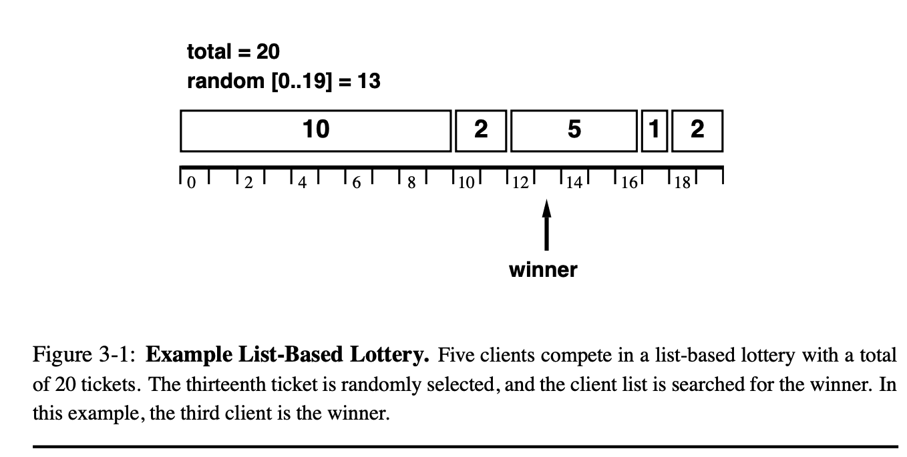
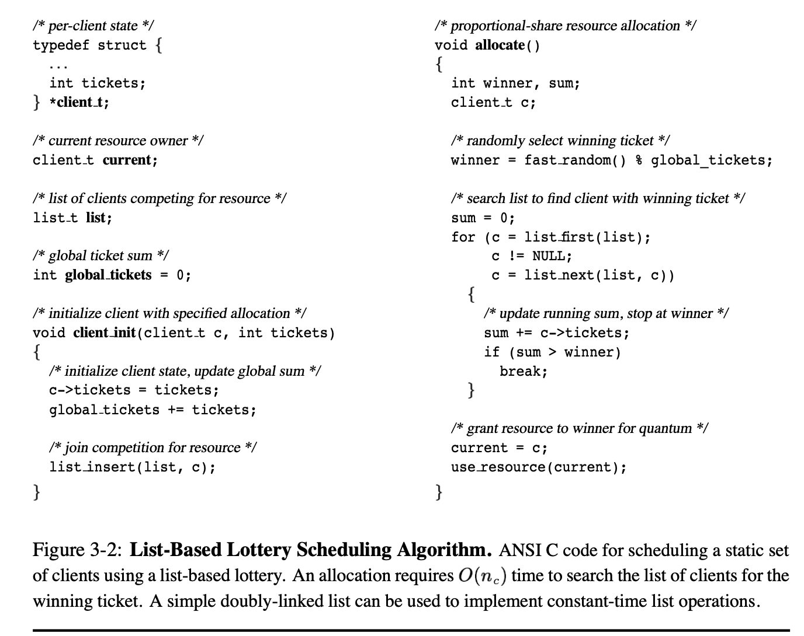
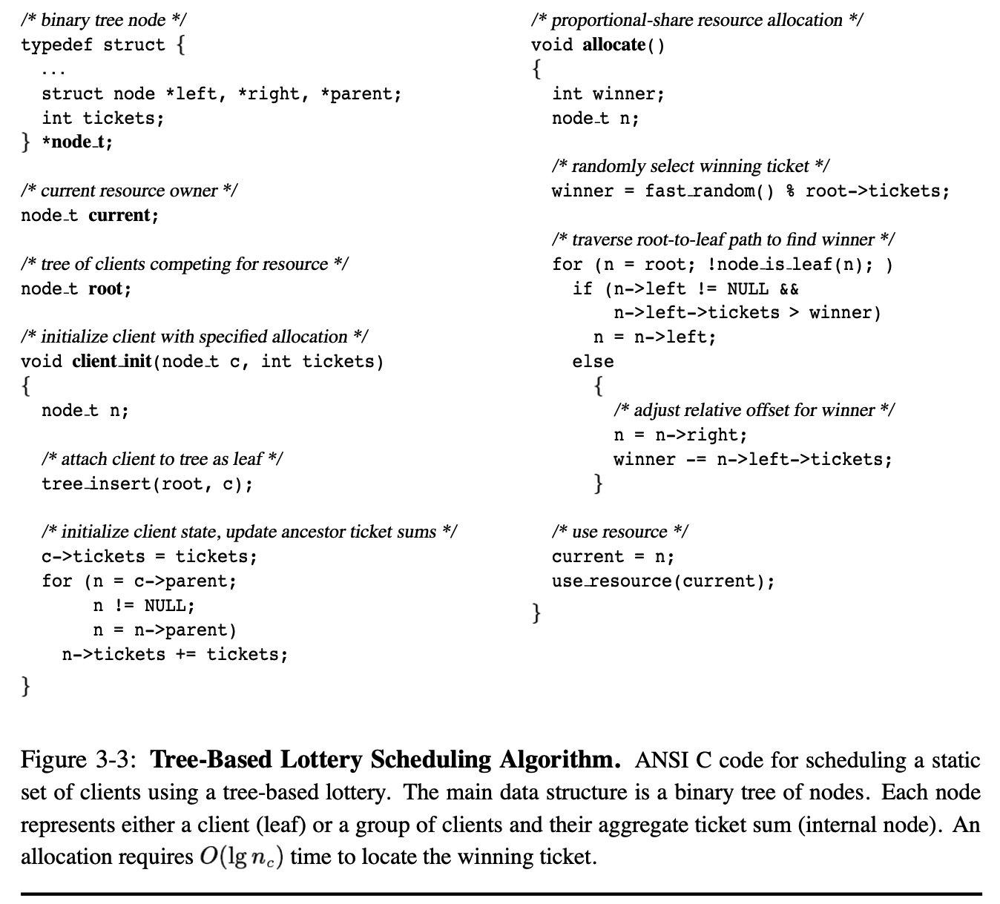
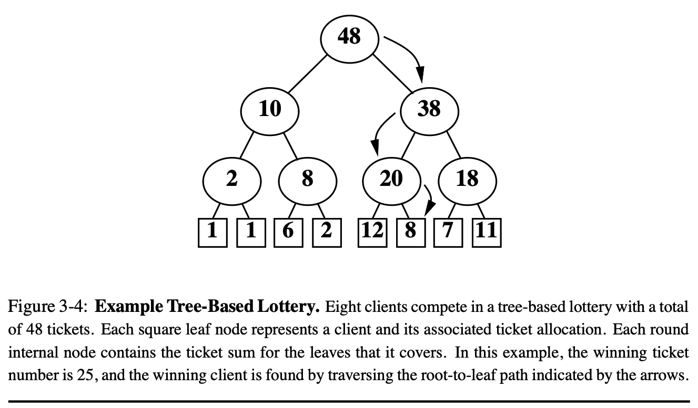
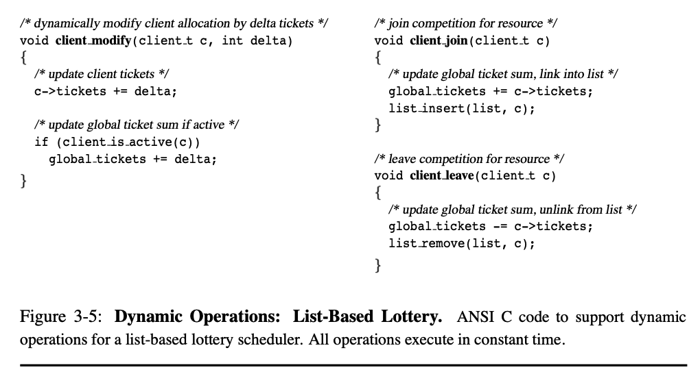
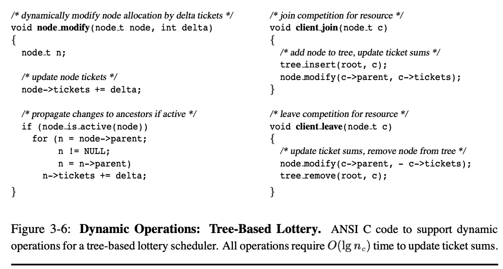
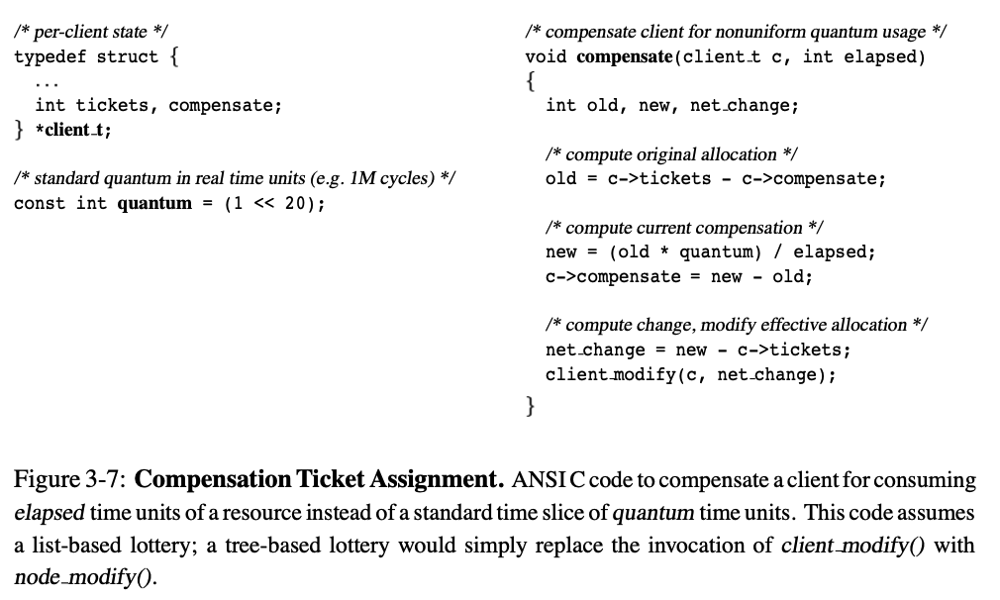
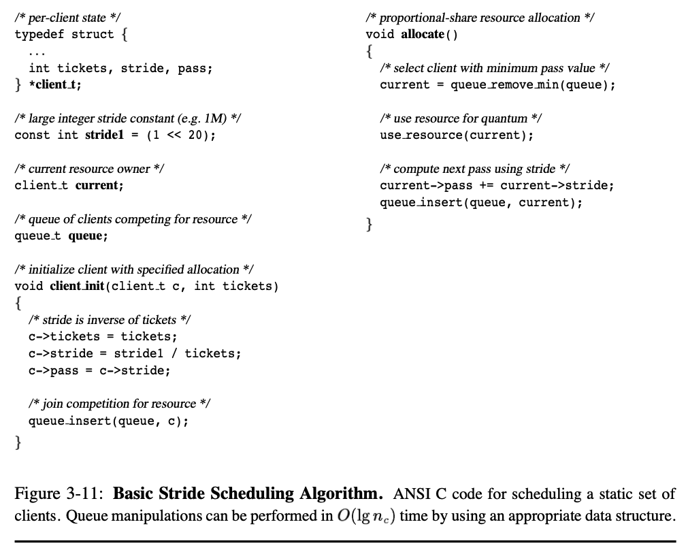

[论文翻译] Lottery and Stride Scheduling: Flexible Proportional-Share Resource Management
Resource Management Framework
This chapter presents a general, flexible framework for specifying resource management policies in concurrent systems. Resource rights are encapsulated by abstract, first-class objects called tickets. Ticket-based policies are expressed using two basic techniques: ticket transfers and ticket inflation. Ticket transfers allow resource rights to be directly transferred and redistributed among clients. Ticket inflation allows resource rights to be changed by manipulating the overall supply of tickets. A powerful currency abstraction provides flexible, modular control over ticket inflation. Currencies also support the sharing, protecting, and naming of resource rights. Several example resource management policies are presented to demonstrate the versatility of this framework
本章提出了一个用于在并发系统中指定资源管理策略的通用且灵活的框架。资源权限通过 被称为“票据”（tickets）的抽象一等对象进行封装。基于票据的策略通过两种基本技术 来表达：票据转移和票据膨胀。票据转移允许资源权限在客户端之间直接转移和重新分配。 票据膨胀则通过操作票据的整体供应量来改变资源权限。一个强大的货币抽象为票据膨胀 提供了灵活、模块化的控制。货币还支持资源权限的共享、保护和命名。本章还通过几个 示例资源管理策略，展示了该框架的多样性和灵活性。
first-class:
一类对象：是指一个实体，拥有编程语言中和其他变量相同的权利和能力
例如：函数, 可以像普通变量一样
- 赋值给变量
- 当作参数传递给其他函数
- 在函数中返回
(等等) 这里的ticket 提到是first-class 表示为可以灵活的进行操作和传递，而不是 受限的，只能在特定场景下使用(from GPT4.1)
2.1 Tickets
Resource rights are encapsulated by first-class objects called tickets. Tickets can be issued in different amounts, so that a single physical ticket may represent any number of logical tickets. In this respect, tickets are similar to monetary notes which are also issued in different denominations. For example, a single ticket object may represent one hundred tickets, just as a single $100 bill represents one hundred separate $1 bills.
Tickets are owned by clients that consume resources. A client is considered to be active while it is competing to acquire more resources. An active client is entitled to consume resources at a rate proportional to the number of tickets that it has been allocated. Thus, a client with twice as many tickets as another is entitled to receive twice as much of a resource in a given time interval. The number of tickets allocated to a client also determines its entitled response time. Client response times are defined to be inversely proportional to ticket allocations. Therefore, a client with twice as many tickets as another is entitled to wait only half as long before acquiring a resource.
资源权限通过被称为“票据”（tickets）的一等对象进行封装。票据可以以不同的数量发 行，因此一张实际的票据可以代表任意数量的逻辑票据。在这方面，票据类似于以不同面 额发行的货币纸币。例如，一个票据对象可以代表一百张票，就像一张100美元的钞票代 表一百张1美元的钞票一样。
票据由消耗资源的客户端拥有。只要客户端正在争取获取更多资源，就被视为活跃客户端。 活跃客户端有权按照其分配到的票据数量按比例消耗资源。因此，某个客户端的票据数量 是另一个客户端的两倍时，它在一定时间间隔内获得的资源也应是后者的两倍。分配给客 户端的票据数量还决定了它应有的响应时间。客户端的响应时间被定义为与其票据分配数 量成反比。因此，某个客户端的票据数量是另一个的两倍时，它在获取资源前的等待时间 也只有后者的一半。
Tickets encapsulate resource rights that are abstract, relative, and uniform. Tickets are abstract because they quantify resource rights independently of machine details. Tickets are relative since the fraction of a resource that they represent varies dynamically in proportion to the contention for that resource. Thus, a client will obtain more of a lightly contended resource than one that is highly contended. In the worst case, a client will receive a share proportional to its share of tickets in the system. This property facilitates adaptive clients that can benefit from extra resources when other clients do not fully utilize their allocations. Finally, tickets are uniform because rights for heterogeneous resources can be homogeneously represented as tickets. This property permits clients to use quantitative comparisons when making decisions that involve tradeoffs between different resources.
票据（tickets）封装了抽象的、相对的和统一的资源权限。票据是抽象的，因为它们在 量化资源权限时不依赖于具体的机器细节。票据是相对的，因为它们所代表的资源份额会 根据对该资源的竞争情况动态变化。因此，当资源竞争较少时，客户端可以获得更多资源； 而当资源竞争激烈时，客户端获得的资源就会减少。在最坏的情况下，客户端获得的资源 份额会与其在系统中拥有的票据份额成正比。这个特性有利于自适应客户端——当其他客户 端没有充分利用分配给自己的资源时，它们可以获得额外的资源。最后，票据是统一的， 因为不同类型的资源权限都可以用票据这种统一的形式来表示。这个特性使客户端在需要 在不同资源之间进行权衡决策时，可以采用定量比较的方法。
In general, tickets have properties that are similar to those of money in computational economies [WHH 92]. The only significant difference is that tickets are not consumed when they are used to acquire resources. A client may reuse a ticket any number of times, but a ticket may only be used to compete for one resource at a time. In economic terms, a ticket behaves much like a constant monetary income stream.
一般来说，票据具有与计算经济学中的货币类似的属性 [WHH 92]。唯一显著的区别在于， 票据在用于获取资源时并不会被消耗。一个客户端可以无限次地重复使用同一个票据，但一 个票据在同一时刻只能用于竞争一种资源。从经济学的角度来看，票据的行为很像一条恒定 的货币收入流。
2.2 Ticket Transfers
A ticket transfer is an explicit transfer of first-class ticket objects from one client to another. Ticket transfers can be used to implement resource management policies by directly redistributing resource rights. Transfers are useful in any situation where one client blocks waiting for another. For example, Figure 2-1 illustrates the use of a ticket transfer during a synchronous remote procedure call (RPC). A client performs a temporary ticket transfer to loan its resource rights to the server computing on its behalf.
票据转移是将一等票据对象从一个客户端显式转移到另一个客户端的过程。票据转移可以 通过直接重新分配资源权限来实现资源管理策略。在任何一个客户端因等待另一个客户端 而阻塞的情况下，票据转移都非常有用。例如，图2-1展示了在同步远程过程调用（RPC） 期间票据转移的用法。客户端通过临时票据转移，将其资源权限借给代表其进行计算的服 务器。
Ticket transfers also provide a convenient solution to the conventional priority inversion problem in a manner that is similar to priority inheritance [SRL90]. For example, clients waiting to acquire a lock can temporarily transfer tickets to the current lock owner. This provides the lock owner with additional resource rights, helping it to obtain a larger share of processor time so that it can more quickly release the lock. Unlike priority inheritance, transfers from multiple clients are additive. A client also has the flexibility to split ticket transfers across multiple clients on which it may be waiting. These features would not make sense in a priority-based system, since resource rights do not vary smoothly with priorities.
票据转移还为传统的优先级反转问题提供了一种方便的解决方案，其方式类似于优先级继 承 [SRL90]。例如，等待获取锁的客户端可以临时将票据转移给当前的锁拥有者。这样会 赋予锁拥有者额外的资源权限，帮助其获得更多的处理器时间，从而可以更快地释放锁。 与优先级继承不同，来自多个客户端的票据转移是可以累加的。客户端还可以灵活地将票 据转移拆分给多个它正在等待的其他客户端。这些特性在基于优先级的系统中是没有意义 的，因为资源权限不会随着优先级的变化而平滑变化。
Ticket transfers are capable of specifying any ticket-based resource management policy, since transfers can be used to implement any arbitrary distribution of tickets to clients. However, ticket transfers are often too low-level to conveniently express policies. The exclusive use of ticket transfers imposes a conservation constraint: tickets may be redistributed, but they cannot be created or destroyed. This constraint ensures that no client can deprive another of resources without its permission. However, it also complicates the specification of many natural policies.
票据转移能够实现任何基于票据的资源管理策略，因为通过转移可以将票据按照任意方式 分配给各个客户端。然而，票据转移往往过于底层，不便于方便地表达各种策略。仅使用 票据转移会带来一个守恒约束：票据只能被重新分配，不能被创建或销毁。这个约束能够 确保没有客户端在未经许可的情况下剥夺其他客户端的资源，但它也使得很多自然的策略 变得难以实现。
For example, consider a set of processes, each a client of a time-shared processor resource. Suppose that a parent process spawns child subprocesses and wants to allocate resource rights equally to each child. To achieve this goal, the parent must explicitly coordinate ticket transfers among its children whenever a child process is created or destroyed. Although ticket transfers alone are capable of supporting arbitrary resource management policies, their specification is often unnecessarily complex
例如，考虑一组进程，每个进程都是时间共享处理器资源的客户端。假设一个父进程产生 了子进程，并希望将资源权限平均分配给每个子进程。为了实现这一目标，父进程必须在 每次创建或销毁子进程时，显式地协调子进程之间的票据转移。尽管仅通过票据转移可以 支持任意的资源管理策略，但其具体实现往往不必要地复杂。
2.3 Ticket Inflation and Deflation
Ticket inflation and deflation are alternatives to explicit ticket transfers. Client resource rights can be escalated by creating more tickets, inflating the total number of tickets in the system. Similarly, client resource rights can be reduced by destroying tickets, deflating the overall number of tickets. Ticket inflation and deflation are useful among mutually trusting clients, since they permit resource rights to be reallocated without explicitly reshuffling tickets among clients. This can greatly simplify the specification of many resource management policies. For example, a parent process can allocate resource rights equally to child subprocesses simply by creating and assigning a fixed number of tickets to each child that is spawned, and destroying the tickets owned by each child when it terminates.
票据膨胀和收缩是显式票据转移的替代方案。通过创建更多的票据，可以提升客户端的资 源权限，从而增加系统中票据的总数，即票据膨胀。类似地，通过销毁票据，可以减少客 户端的资源权限，从而降低系统中票据的总数，即票据收缩。票据膨胀和收缩在相互信任 的客户端之间非常有用，因为它们允许在不需要显式地在客户端之间重新分配票据的情况 下，重新分配资源权限。这可以极大地简化许多资源管理策略的实现。例如，父进程可以 在生成每个子进程时，通过创建并分配固定数量的票据给每个子进程，从而实现资源权限 的平均分配；当子进程终止时，则销毁其持有的票据。
However, uncontrolled ticket inflation is dangerous, since a client can monopolize a resource by creating a large number of tickets. Viewed from an economic perspective, inflation is a form of theft, since it devalues the tickets owned by all clients. Because inflation can violate desirable modularity and insulation properties, it must be either prohibited or strictly controlled
然而，不受控制的票据膨胀是危险的，因为客户端可以通过创建大量票据来垄断资源。从 经济学的角度来看，膨胀是一种盗窃行为，因为它会使所有客户端持有的票据贬值。由于 膨胀可能破坏理想的模块化和隔离特性，因此必须禁止或严格控制票据膨胀

A key observation is that the desirability of inflation and deflation hinges on trust. Trust implies permission to appropriate resources without explicit authorization. When trust is present, explicit ticket transfers are often more cumbersome and restrictive than simple, local ticket inflation. When trust is absent, misbehaving clients can use inflation to plunder resources. Distilled into a single principle, ticket inflation and deflation should be allowed only within logical trust boundaries. The next section introduces a powerful abstraction that can be used to define trust boundaries and safely exploit ticket inflation.
一个关键的观点是，票据膨胀和收缩的可取性取决于信任。信任意味着可以在没有明确授 权的情况下占用资源。当存在信任时，显式票据转移往往比简单的本地票据膨胀更加繁琐 和受限。而在缺乏信任的情况下，行为不端的客户端可能会利用膨胀来掠夺资源。归结为 一个原则，票据膨胀和收缩应仅在逻辑信任边界内被允许。下一节将介绍一种强大的抽象 方法，可以用来定义信任边界，并安全地利用票据膨胀。
Ticket Currencies
A ticket currency is a resource management abstraction that contains the effects of ticket inflation in a modular way. The basic concept of a ticket is extended to include a currency in which the ticket is denominated. Since each ticket is denominated in a currency, resource rights can be expressed in units that are local to each group of mutually trusting clients. A currency derives its value from backing tickets that are denominated in more primitive currencies. The ticketsthat back a currency are said to fund that currency. The value of a currency can be used to fund other currencies or clients by issuing tickets denominated in that currency. The effects of inflation are locally contained by effectively maintaining an exchange rate between each local currency and a common base currency that is conserved. The values of tickets denominated in different currencies are compared by first converting them into units of the base currency
票据货币是一种资源管理抽象，可以以模块化的方式限制票据膨胀的影响。票据的基本概 念被扩展为包含其所计价的货币。由于每张票据都以某种货币计价，资源权限可以用只在 一组相互信任的客户端内部有效的单位来表达。一种货币的价值来源于以更原始货币计价 的、为其提供支持的票据。为某种货币提供支持的票据被称为为该货币“提供资金”。货币 的价值可以通过发行以该货币计价的票据，来为其他货币或客户端提供资金。通过有效地 维护每种本地货币与一个守恒的通用基础货币之间的汇率，膨胀的影响被局部限制。不同 货币计价的票据价值可以通过先将其兑换为基础货币单位，再进行比较。
Figure 2-2 depicts key aspects of ticket and currency objects. A ticket object consists of an amount denominated in some currency; the notation amount.currency will be used to refer to a ticket. A currency object consists of a unique name, a list of backing tickets that fund the currency, a list of tickets issued in the currency, and an amount that contains the total number of active tickets issued in the currency. In addition, each currency should maintain permissions that determine which clients have the right to create and destroy tickets denominated in that currency. A variety of well-known schemes can be used to implement permissions [Tan92]. For example, an access control list can be associated with each currency to specify those clients that have permission to inflate it by creating new tickets.
图2-2展示了票据和货币对象的关键方面。一个票据对象由以某种货币计价的金额组成， 记作 amount.currency。一个货币对象由唯一名称、为该货币提供资金的支持票据列表、 以该货币发行的票据列表，以及表示该货币已发行的有效票据总数的金额组成。此外，每 种货币还应维护权限，用于确定哪些客户端有权创建和销毁以该货币计价的票据。可以采 用多种知名方案来实现权限管理 [Tan92]。例如，可以为每种货币关联一个访问控制列表， 以指定哪些客户端有权限通过创建新票据来进行膨胀。
Currency relationships may form an arbitrary acyclic graph, enabling a wide variety of different resource management policies. One useful currency configuration is a hierarchy of currencies. Each currency divides its value into subcurrencies that recursively subdivide and distribute that value by issuing tickets. Figure 2-3 presents an example currency graph with a hierarchical tree structure. In addition to the common base currency at the root of the tree, distinct currencies are associated with each user and task. Two users, Alice and Bob, are competing for computing resources. The alice currency is backed by 3000 tickets denominated in the base currency (3000.base), and the bob currency is backed by 2000 tickets denominated in the base currency (2000.base). Thus, Alice is entitled to 50% more resources than Bob, since their currencies are funded at a 3 : 2 ratio.
货币关系可以形成任意的无环图，从而支持多种不同的资源管理策略。其中一种有用的货 币配置是货币层级结构。每种货币通过发行票据，将其价值分割成子货币，并递归地细分 和分配这些价值。图2-3展示了一个具有层级树结构的货币图示例。除了树根处的公共基 础货币之外，每个用户和任务都关联着不同的货币。两个用户，Alice 和 Bob，正在竞争 计算资源。alice 货币由以基础货币计价的 3000 张票据（3000.base）支持，bob 货币 由以基础货币计价的 2000 张票据（2000.base）支持。因此，Alice 有权获得比 Bob 多 50% 的资源，因为他们的货币支持比例为 3 : 2。
Alice is executing two tasks, task1 and task2. She subdivides her allocation between these tasks in a 2 : 1 ratio using tickets denominated in her own currency – 200.alice and 100.alice. Since a total of 300 tickets are issued in the alice currency, backed by a total of 3000 base tickets, the exchange rate between the alice and base currencies is 1 : 10. Bob is executing a single task, task3, and uses his entire allocation to fund it via a single 100.bob ticket. Since a total of 100 tickets are issued in the bob currency, backed by a total of 2000 base tickets, the bob : base exchange rate is 1 : 20. If Bob were to create a second task with equal funding by issuing another 100.bob ticket, this exchange rate would become 1 : 10.
Alice 正在执行两个任务：task1 和 task2。她通过以自己货币计价的票据——200.alice 和 100.alice——按照 2 : 1 的比例将分配的资源划分给这两个任务。由于 alice 货币一 共发行了 300 张票据，而其背后由 3000 张基础货币票据支持，alice 与基础货币之间 的汇率为 1 : 10。Bob 正在执行一个任务 task3，并通过一张 100.bob 的票据将他全部 的分配资源用于该任务。由于 bob 货币一共发行了 100 张票据，由 2000 张基础货币票 据支持，bob 与基础货币之间的汇率为 1 : 20。如果 Bob 再创建一个任务，并通过再发 行一张 100.bob 的票据给予同等资源支持，那么 bob 货币与基础货币的汇率将变为 1 : 10。
The currency abstraction is useful for flexibly sharing, protecting, and naming resource rights. Sharing is supported by allowing clients with proper permissions to inflate or deflate a currency by creating or destroying tickets. For example, a group of mutually trusting clients can form a currency that pools its collective resource rights in order to simplify resource management. Protection is guaranteed by maintaining exchange rates that automatically adjust for intra-currency fluctuations that result from internal inflation or deflation. Currencies also provide a convenient way to name resource rights at various levels of abstraction. For example, currencies can be used to name the resource rights allocated to arbitrary collections of threads, tasks, applications, or users.
货币抽象对于灵活地共享、保护和命名资源权限非常有用。共享通过允许拥有适当权限的 客户端，通过创建或销毁票据来膨胀或收缩货币得以实现。例如，一组相互信任的客户端 可以创建一个货币，将其集体资源权限集中起来，以简化资源管理。保护则通过维护汇率 来保证，这些汇率会自动调整，以应对由于内部膨胀或收缩而导致的货币内部波动。货币 还为在不同抽象层次上命名资源权限提供了方便的方法。例如，货币可以用来为任意线程、 任务、应用或用户集合分配的资源权限命名。
Since there is nothing comparable to a currency abstraction in conventional operating systems, it is instructive to examine similar abstractions that are provided in the domain of programming languages. Various aspects of currencies can be related to features of objectoriented systems, including data abstraction, class definitions, and multiple inheritance.
由于传统操作系统中并没有类似于货币抽象的机制，因此研究编程语言领域中提供的类似 抽象是很有启发意义的。货币的各个方面可以与面向对象系统中的一些特性相关联，包括 数据抽象、类定义以及多重继承等。
For example, currency abstractions for resource rights resemble data abstractions for data objects. Data abstractions hide and protect representations by restricting access to an abstract data type. By default, access is provided only through abstract operations exported by the data type. The code that implements those abstract operations, however, is free to directly manipulate the underlying representation of the abstract data type. Thus, an abstraction barrier is said to exist between the abstract data type and its underlying representation [LG86].
例如，用于资源权限的货币抽象类似于用于数据对象的数据抽象。数据抽象通过限制对抽 象数据类型的访问，隐藏并保护其内部表示。默认情况下，只有通过该数据类型导出的抽 象操作才能进行访问。然而，实现这些抽象操作的代码可以直接操作抽象数据类型的底层 表示。因此，在抽象数据类型与其底层表示之间，存在一个所谓的抽象屏障 [LG86]。
A currency defines a resource management abstraction barrier that provides similar properties for resource rights. By default, clients are not trusted, and are restricted from interfering with resource management policies that distribute resource rights within a currency. The clients that implement a currency’s resource management policy, however, are free to directly manipulate and redistribute the resource rights associated with that currency.
一种货币定义了一个资源管理的抽象屏障，为资源权限提供了类似的属性。默认情况下， 客户端是不被信任的，因此被限制不能干扰在该货币内部分配资源权限的资源管理策略。 而实现某种货币资源管理策略的客户端，则可以自由地直接操作和重新分配与该货币相关 的资源权限。
The use of currencies to structure resource-right relationships also resembles the use of classes to structure object relationships in object-oriented systems that support multiple inheritance. A classinheritsits behavior from a set ofsuperclasses, which are combined and modified to specify new behaviors for instances of that class. A currency inherits its funding from a set of backing tickets, which are combined and then redistributed to specify allocations for tickets denominated in that currency. However, one difference between currencies and classes is the relationship among the objects that they instantiate. When a currency issues a new ticket, it effectively dilutes the value of all existing tickets denominated in that currency. In contrast, the objects instantiated by a class need not affect one another.
用货币来构建资源权限关系的方式，也类似于在支持多重继承的面向对象系统中用类来构 建对象关系。一个类从一组超类继承其行为，并通过组合和修改这些超类，来为该类的实 例指定新的行为。同样，货币通过一组支持票据获得其资金，这些票据被组合并重新分配， 用于指定以该货币计价票据的分配。然而，货币和类之间有一个重要的区别，那就是它们 所实例化对象之间的关系。当一种货币发行新票据时，实际上会稀释该货币下所有现有票 据的价值。相比之下，由一个类实例化的对象则不会相互影响。
2.5 Example Policies
A wide variety of resource management policies can be specified using the general framework presented in this chapter. This section examines several different resource management scenarios, and demonstrates how appropriate policies can be specified.
可以使用本章提出的通用框架来制定各种资源管理策略。本节将分析几种不同的资源管理 场景，并展示如何指定合适的策略。
2.5.1 Basic Policies
Unlike priorities which specify absolute precedence constraints,tickets are specifically designed to specify relative service rates. Thus, the most basic examples of ticket-based resource management policies are simple service rate specifications. If the total number of tickets in a system is fixed, then a ticket allocation directly specifies an absolute share of a resource. For example, a client with 125 tickets in a system with a total of 1000 tickets will receive a 12.5% resource share. Ticket allocations can also be used to specify relative importance. For example, a client that is twice as important as another is simply given twice as many tickets.
与优先级（用于指定绝对优先约束）不同，票据（tickets）专门用于指定相对服务速率。 因此，基于票据的资源管理策略最基本的例子就是简单的服务速率规定。如果系统中的票 据总数是固定的，那么票据分配就直接指定了资源的绝对份额。例如，在一个总票据数为 1000的系统中，某个客户端拥有125张票据，则它将获得12.5%的资源份额。票据分配也可 以用来指定相对重要性。例如，一个客户端比另一个重要两倍时，只需分配给它两倍的票 据即可。
Ticket inflation and deflation provide a convenient way for concurrent clients to implement resource management policies. For example, cooperative (AND-parallel) clients can independently adjust their ticket allocations based upon application-specific estimates of remaining work. Similarly, competitive (OR-parallel) clients can independently adjust their ticket allocations based on application-specific metrics for progress. One concrete example is the management of concurrent computations that perform heuristic searches. Such computations typically assign numerical values to summarize the progress made along each search path. These values can be used directly as ticket assignments, focusing resources on those paths which are most promising, without starving the exploration of alternative paths.
票据的膨胀和收缩为并发客户端实现资源管理策略提供了一种便捷的方法。例如，协作式 （AND-并行）客户端可以根据应用特定的剩余工作量估算，独立地调整其票据分配。同样， 竞争式（OR-并行）客户端可以根据应用特定的进度指标，独立地调整其票据分配。一个 具体的例子是管理执行启发式搜索的并发计算。这类计算通常会为每条搜索路径分配数值， 以总结其进展情况。这些数值可以直接用作票据分配，将资源集中于最有前景的路径，同 时不会让其他替代路径的探索陷入饥饿状态。
Tickets can also be used to fund speculative computations that have the potential to accelerate a program’s execution, but are not required for correctness. With relatively small ticket allocations, speculative computations will be scheduled most frequently when there is little contention for resources. During periods of high resource contention, they will be scheduled very infrequently. Thus, very low service rate specifications can exploit unused resources while limiting the impact of speculation on more important computations.
票据还可以用于支持具有加速程序执行潜力但并非正确性所必需的投机性计算。通过分配 较少的票据，投机性计算通常会在资源竞争较小的时候被频繁调度；而在资源竞争激烈的 时期，它们则很少被调度。因此，极低的服务速率设定既能利用未被使用的资源，又能限 制投机性计算对更重要计算任务的影响。
If desired, tickets can also be used to approximate absolute priority levels. For example, a series of currencies $c_1$, $c_2$, … , $c_n$ can be defined such that currency $c_i$ has 100 times the funding of currency $c_i-1$. A client with emulated priority level is allocated a single ticket denominated currency $c_i$. Clients at priority level $i$ will be serviced 100 times more frequently than clients $i-1$, approximating a strict priority ordering.
如果需要，票据也可以用来近似实现绝对优先级。例如，可以定义一系列货币 c₁、c₂、…、 $c_n$, 使得货币 cᵢ 的资金量是货币 cᵢ-1 的 100 倍。具有模拟优先级的客户端会被分配 一个以货币 cᵢ 计价的票据。处于优先级 i 的客户端将比处于优先级 i-1 的客户端获得 100 倍的服务频率，从而近似实现严格的优先级排序。
2.5.2 Administrative Policies
For long-running computationssuch as those found in engineering and scientific environments, there is a need to regulate the consumption of computing resources that are shared among users and applications of varying importance [Hel93]. Currencies can be used to isolate the policies of projects, users, and applicationsfrom one another, and relative funding levels can be used to specify importance.
For example, a system administrator can allocate ticket levels to different groups based on criteria such as project importance, resource needs, or real monetary funding. Groups can subdivide their allocations among users based upon need or status within the group; an egalitarian approach would give each user an equal allocation. Users can directly allocate their own resource rights to applications based upon factors such as relative importance or impending deadlines. Since currency relationships need not follow a strict hierarchy, users may belong to multiple groups. It is also possible for one group to subsidize another. For example, if group A is waiting for results from group B, it can issue a ticket denominated in currency A, and use it to fund group B.
对于工程和科学领域中常见的长时间运行计算，有必要对在不同重要性用户和应用之间共 享的计算资源进行调控 [Hel93]。可以通过货币机制将项目、用户和应用的策略相互隔离， 并利用相对资金水平来指定其重要性。
例如，系统管理员可以根据项目重要性、资源需求或实际资金等标准，为不同的群组分配 票据额度。各群组可以根据成员的需求或地位将分配的票据进一步划分给用户；采用平等 主义方法时，则为每个用户分配相同额度。用户又可以根据应用的相对重要性或临近的截 止时间，将自己的资源权直接分配给具体应用。由于货币关系不必遵循严格的层级结构， 用户可以属于多个群组。同时，一个群组也可以补贴另一个群组。例如，如果群组A在等 待群组B的结果，A可以发行以货币A计价的票据，并用其资助群组B
2.5.3 Interactive Application Policies
For interactive computations such as databases and media-based applications, programmers and users need the ability to rapidly focus resources on those tasks that are currently important. In fact, research in computer-human interaction has demonstrated that responsiveness is often the most significant factor in determining user productivity [DJ90].
Many interactive systems, such as databases and the World Wide Web, are structured using a client-server framework. Servers process requests from a wide variety of clients that may demand different levels of service. Some requests may be inherently more important or time-critical than others. Users may also vary in importance or willingness to pay a monetary premium for better service. In such scenarios, ticket allocations can be used to specify importance, and ticket transfers can be used to allow servers to compute using the resource rights of requesting clients.
对于交互式计算（如数据库和基于媒体的应用），程序员和用户需要能够快速将资源集中 到当前重要的任务上。事实上，计算机与人类交互的研究已经表明，响应速度往往是决定 用户生产力的最重要因素之一 [DJ90]。
许多交互式系统（如数据库和万维网）都采用客户端-服务器框架。服务器要处理来自各 种客户端的请求，这些请求可能对服务水平有不同的需求。有些请求本身就比其他请求更 重要或更具时效性。用户之间也可能因重要性或愿意为更好服务支付额外费用而有所不同。 在这种情况下，可以通过票据分配来指定重要性，通过票据转移让服务器使用请求客户端 的资源权进行计算。
Another scenario that is becoming increasingly common is the need to control the quality of service when two or more video viewers are displayed [CT94]. Adaptive viewers are capable of dynamically altering image resolution and frame rates to match current resource availability. Coupled with dynamic ticket inflation, adaptive viewers permit users to selectively improve the quality of those video streams to which they are currently paying the most attention. For example, a graphical control associated with each viewer could be manipulated to smoothly improve or degrade a viewer’s quality of service by inflating or deflating its ticket allocation. Alternatively, a preset number of tickets could be associated with the window that owns the current input focus. Dynamic ticket transfers make it possible to shift resources as the focus changes, e.g., in response to mouse movements. With an input device capable of tracking eye movements, a similar technique could even be used to automatically adjust the performance of applications based upon the user’s visual focal point.
另一种日益常见的场景是，当同时显示两个或更多视频播放器时，需要控制服务质量 [CT94]。自适应播放器能够根据当前的资源可用性动态调整图像分辨率和帧率。结合动态 票据膨胀机制，自适应播放器允许用户有选择地提升他们当前最关注的视频流的服务质量。 例如，可以通过与每个播放器关联的图形控制组件，平滑地提升或降低某个播放器的服务 质量，方法是膨胀或收缩其票据分配。或者，可以将预设数量的票据分配给当前拥有输入 焦点的窗口。动态票据转移机制使得在焦点变化（如响应鼠标移动）时能够灵活地重新分 配资源。如果输入设备能够跟踪眼动，甚至可以利用类似技术根据用户的视觉焦点自动调 节应用程序的性能。
In addition to user-directed control over resource management, programmatic application- level control can also be used to improve responsiveness despite resource limitations [DJ90, TL93]. For example, a graphics-intensive program could devote a large share of its processing resources to a rendering operation until it has displayed a crude but usable outline or wire- frame. The share of resources devoted to rendering could then be reduced via ticket deflation, allowing a more polished image to be computed while most resources are devoted to improving the responsiveness of more critical operations.
除了用户对资源管理的直接控制之外，应用程序级的编程控制也可以在资源有限的情况下 提升响应速度 [DJ90, TL93]。例如，一个对图形处理要求较高的程序可以在渲染操作期 间，分配大量处理资源，直到显示出一个粗略但可用的轮廓或线框。随后，可以通过票据 收缩减少分配给渲染的资源份额，使得在计算更精细图像的同时，大部分资源用于提升更 关键操作的响应速度。
Chapter 3 Proportional-Share Mechanisms
This chapter presents mechanisms that can be used to efficiently implement the resource management framework described in Chapter 2. Several novel scheduling algorithms are introduced, including both randomized and deterministic techniques that provide proportional- share control over time-shared resources. The algorithms are presented in the order that they were developed, followed by a discussion of their application to the general resource management framework.
本章介绍了可用于高效实现第2章所述资源管理框架的机制。提出了几种新颖的调度算法， 包括能够对时间共享资源实现比例分配控制的随机和确定性技术。这些算法按照其开发顺 序进行介绍，随后讨论了它们在通用资源管理框架中的应用。
One common theme is the desire to achieve proportional sharing with a high degree of accuracy. The throughput accuracy of a proportional-share scheduler can be characterized by measuring the difference between the specified and actual number of allocations that a client receives during a series of allocations. If a client has $t$ tickets in a system with a total of $T$ tickets, then its specified allocation after consecutive $n_a$ allocations is $n_a t / T$ . Due to quantization, it is typically impossible to achieve this ideal exactly. A client’s absolute error is defined as the absolute value of the difference between its specified and actual number of allocations. The pairwise relative error between clients $c_i$ and $c_j$ is defined as the absolute error for the subsystem containing only $c_i$ and $c_j$, where $T = t_i + t_j$, and $n_a$ is the total number of allocations received by both clients.
一个共同的主题是希望实现高度精确的比例共享。比例分配调度器的吞吐精度可以通过测 量在一系列分配过程中，客户端实际获得的分配次数与其规定分配次数之间的差异来衡量。 如果某个客户端拥有 $t$ 张票据，而系统中共有 $T$ 张票据，那么在连续 $n_a$ 次分 配后，该客户端的规定分配次数为 $n_a \cdot \frac{t}{T}$。由于量化的存在，通常无 法完全达到这一理想值。客户端的绝对误差定义为其规定分配次数与实际分配次数之差的 绝对值。客户端 $c_i$ 和 $c_j$ 之间的成对相对误差定义为仅包含 $c_i$ 和 $c_j$ 的 子系统中的绝对误差，其中 $T = t_i + t_j$，$n_a$ 是这两个客户端实际获得的分配次 数之和。
Another key issue is the challenge of providing efficient, systematic support for dynamic operations, such as modifications to ticket allocations, and changes in the number of clients competing for a resource. Support for fast dynamic operations is also required for low-overhead implementations of higher-level abstractions such as ticket transfers, ticket inflation, and ticket currencies. Many proportional-share mechanisms that are perfectly reasonable for static envi- ronments exhibit ad-hoc behavior or unacceptable performance in dynamic environments.
另一个关键问题是如何高效、系统地支持动态操作，比如票据分配的修改，以及竞争某项 资源的客户端数量的变化。对于高层抽象（如票据转移、票据膨胀和票据货币）的低开销 实现，也需要对动态操作提供快速支持。许多在静态环境下完全合理的比例分配机制，在 动态环境下却表现出临时性的行为或不可接受的性能。
After initial experimentation with a variety of different techniques, I discovered that ran- domization could be exploited to avoid most of the complexity associated with dynamic op- erations. This realization led to the development of lottery scheduling, a new randomized resource allocation mechanism [WW94]. Lottery scheduling performs an allocation by hold- ing a lottery; the resource is granted to the client with the winning ticket. Due to its inherent use of randomization, a client’s expected relative error and expected absolute error under lottery scheduling are both $O\sqrt{n_a}$. Thus, lottery scheduling can exhibit substantial variability over small numbers of allocations. Attempts to limit this variability resulted in an investigation of multi-winner lottery scheduling, a hybrid technique with both randomized and deterministic components.
在对多种不同技术进行初步实验后，我发现可以利用随机化来避免与动态操作相关的大部 分复杂性。这一认识促使我开发了彩票调度（lottery scheduling），这是一种新的随机 化资源分配机制 [WW94]。彩票调度通过举办一次“彩票抽奖”来进行分配，资源会被分配 给持有中奖票据的客户端。由于其本质上采用了随机化方法，客户端在彩票调度下的期望 相对误差和期望绝对误差都是 $O\sqrt{n_a}$。因此，彩票调度在分配次数较少时可能会 表现出较大的波动。为了限制这种波动，我进一步研究了多赢家彩票调度（multi-winner lottery scheduling），这是一种结合了随机和确定性成分的混合技术。
A desire for even more predictable behavior over shorter time scales prompted a renewed effort to develop a deterministic algorithm with efficient support for dynamic operations. Optimization of an inefficient algorithm that I originally developed before the conception of lottery scheduling resulted in stride scheduling [WW95]. Stride scheduling is a deterministic algorithm that computes a representation of the time interval, or stride, that each client must wait between successive allocations. Under stride scheduling, the relative error for any pair of clients is never greater than one, independent of . However, for skewed ticket distributions it is still possible for a client to have $O(n_c)$ absolute error, where $n_c$ is the number of clients.
对在较短时间尺度内实现更加可预测行为的需求，促使我重新努力开发一种对动态操作具 有高效支持的确定性算法。对我在提出彩票调度之前开发的一个低效算法进行优化，最终 诞生了步进调度（stride scheduling）[WW95]。步进调度是一种确定性算法，它计算每 个客户端在连续分配之间必须等待的时间间隔（即步进）。在步进调度下，任意两个客户 端之间的相对误差永远不会大于 1，并且与 无关。然而，对于票据分布极度不均的情况， 某个客户端的绝对误差仍然可能达到 $O(n_c)$ , 其中 $n_c$ 是客户端的数量。
I later discovered that the core allocation algorithm used in stride scheduling is nearly iden- tical to elements of rate-based flow-control algorithms designed for packet-switched networks [DKS90, Zha91, ZK91, PG93]. Thus, stride scheduling can be viewed as a cross-application of these networking algorithms to schedule other resources such as processor time. However, the original network-oriented algorithms did not address the issue of dynamic operations, such as changes to ticket allocations. Since these operations are extremely important in domains such as processor scheduling, I developed new techniques to efficiently support them. These techniques can also be used to support frequent changes in bandwidth allocations for networks.
后来我发现，步进调度中使用的核心分配算法与为分组交换网络设计的基于速率的流量控 制算法中的某些元素几乎完全相同 [DKS90, Zha91, ZK91, PG93]。因此，步进调度可以 被视为将这些网络算法跨领域应用于诸如处理器时间等其他资源的调度。然而，原始面向 网络的算法并没有解决动态操作的问题，比如票据分配的变动。由于这些操作在处理器调 度等领域极为重要，我开发了新的技术来高效支持这些操作。这些技术同样可以用于支持 网络带宽分配的频繁变化。
Finally, dissatisfaction with the schedules produced by stride scheduling for skewed ticket distributions led to an improved hierarchical stride scheduling algorithm that provides a tighter $O(\lg n_c)$ bound on each client’s absolute error. Hierarchical stride scheduling is a novel recursive application of the basic technique that achieves better throughput accuracy than previous schemes, and can reduce response-time variability for some workloads.
最后，由于步进调度在票据分布极度不均时产生的调度结果令人不满意，促使我提出了一 种改进的分层步进调度算法，该算法能够将每个客户端的绝对误差收紧到 $O(\lg n_c)$ 的界限。分层步进调度是一种对基本技术的递归应用，能够比以往的方案实现更高的吞吐 精度，并且可以降低某些工作负载的响应时间波动性。
The remainder of this chapter presents lottery scheduling, multi-winner lottery scheduling, stride scheduling, and hierarchical stride scheduling. Each mechanism is described in a separate section that begins with a description of the basic algorithm, followed by a discussion of extensions that support dynamic operations and irregular quantum sizes. Source code and examples are included to illustrate each mechanism. The chapter concludes by demonstrating that each presented mechanism is capable of serving as a substrate for the general resource management framework presented in Chapter 2. Detailed simulation results, performance analyses, and comparisons of the mechanisms are presented in Chapter 4.
本章的其余部分将介绍彩票调度、多赢家彩票调度、步进调度以及分层步进调度。每种机 制都在单独的小节中进行描述，首先介绍其基本算法，随后讨论支持动态操作和不规则时 间片大小的扩展。每种机制都配有源代码和示例以便说明。最后，本章将展示这些机制都 能够作为第2章所提出的通用资源管理框架的基础。第4章将详细呈现这些机制的仿真结果、 性能分析以及相互之间的比较。
3.1 Lottery Scheduling
Lottery scheduling is a randomized resource allocation mechanism for time-shared resources. Each allocation is determined by holding a lottery that randomly selects a winning ticket from the set of all tickets competing for a resource. The resource is granted to the client that holds the winning ticket. This simple operation effectively allocates resources to competing clients in proportion to the number of tickets that they hold. This section first presents the basic lottery scheduling algorithm, and then introduces extensions that support dynamic operations and nonuniform quanta.
彩票调度是一种用于时间共享资源的随机化资源分配机制。每次分配都通过举办一次彩票 抽奖来决定，系统会从所有竞争该资源的票据中随机选出一张中奖票据，资源则分配给持 有该中奖票据的客户端。这个简单的操作能够有效地根据各客户端持有票据的数量，按比 例分配资源。本节将首先介绍基本的彩票调度算法，然后介绍支持动态操作和非均匀时间 片的扩展。
3.1.1 Basic Algorithm
The core lottery scheduling idea is to randomly select a ticket from the set of all tickets competing for a resource. Since each ticket has an equal probability of being selected, the probability that a particular client will be selected is directly proportional to the number of tickets that it has been assigned.
彩票调度的核心思想是从所有竞争某项资源的票据集合中随机选取一张票据。由于每张票 据被选中的概率是相等的，因此某个客户端被选中的概率就与其所分配到的票据数量成正 比。
In general, there are clients competing for a resource, and each client has tickets. Thus, there are a total of $\sum_{i=1}^{n_c} t_i$ tickets competing for the resource. The probability that client will win a particular lottery is simply $t_i/T$ . After identical allocations, the expected number of wins for client is $E[W_i] = n_a p_i$, with variance $\sigma = n_a p_i (1 - p_i)$. Thus, the expected allocation of resources to clients is proportional to the number of tickets that they hold. Since the scheduling algorithm is randomized, the actual allocated proportions are not guaranteed to match the expected proportions exactly. However, the disparity between them decreases as the number of allocations increases. More precisely, a client’s expected relative error and expected absolute error are both $O\sqrt{n_a}$. Since error increases slowly with $n_a$, accuracy steadily improves when error is measured as a percentage of $n_a$.
一般来说，系统中有若干客户端在竞争某项资源，每个客户端拥有一定数量的票据。因此， 总共有 $\sum_{i=1}^{n_c} t_i$ 张票据在竞争该资源。某个客户端赢得一次抽奖的概率 就是 $\frac{t_i}{T}$，其中 $T$ 为所有票据的总数。经过 $n_a$ 次相同的分配后，客 户端 $i$ 的期望获胜次数为 $E[W_i] = n_a p_i$，其方差为 $\sigma = n_a p_i (1 - p_i)$。因此，分配给各客户端的资源期望值与其持有的票据数量成正比。由于调度算法 是随机化的，实际分配比例并不一定与期望比例完全一致。然而，随着分配次数的增加， 二者之间的差距会逐渐缩小。更准确地说，客户端的期望相对误差和期望绝对误差都为 $O(\sqrt{n_a})$。由于误差随 $n_a$ 增长较慢，当以 $n_a$ 的百分比来衡量误差时， 准确性会持续提高。
$\sigma = n_a p_i (1 - p_i)$: 二项分布
回头研究下原理
One straightforward way to implement a lottery scheduler is to randomly select a winning ticket, and then search a list of clients to locate the client holding that ticket. Figure 3-1 presents an example list-based lottery. Five clients are competing for a resource with a total of 20 tickets. The thirteenth ticket is randomly chosen, and the client list is searched to determine the client holding the winning ticket. In this example, the third client is the winner, since its region of the ticket space contains the winning ticket.
实现彩票调度器的一种直接方法是随机选择一张获胜票，然后在客户端列表中查找持有该 票的客户端。图3-1展示了一个基于列表的彩票调度示例。五个客户端正在争夺一个总共 包含20张票的资源。第13号票被随机选中，然后在客户端列表中搜索，以确定持有获胜票 的客户端。在这个例子中，第三个客户端获胜，因为它所占据的票据空间包含了获胜票。

Figure 3-2 lists ANSI C code for a basic list-based lottery scheduler. For simplicity, it is assumed that the set of clients is static, and that client ticket assignments are fixed. These restrictions will be relaxed in subsequent sections to permit more dynamic behavior. Each client must be initialized via client_init() before any allocations are performed by allocate(). The allocate() operation begins by calling fast random() to generate a uniformly-distributed pseudo-random integer. Numerous techniques exist for generating random numbers. For example, the Park-Miller generator efficiently produces high-quality random numbers that are uniformly distributed between 0 and $2^{31} - 1$ [PM88, Car90]. The random number produced by fast_random() is then scaled to reside in the interval [0 , global_tickets-1], which will be referred to as the ticket space. The scaled random number, winner, represents the offset of the winning ticket in the ticket space. The ticket space is then scanned by traversing the client list, accumulating a running ticket sum until the winning offset is reached. The client holding the ticket at the winning offset is selected as the winner.
图3-2列出了一个基于列表的彩票调度器的 ANSI C 代码。为简化起见，假定客户端集合 是静态的，且每个客户端的票据分配是固定的。后续章节将放宽这些限制，以实现更动态 的行为。在进行任何分配之前，每个客户端必须通过 client_init() 进行初始化。 allocate() 操作首先调用 fast_random()，生成一个均匀分布的伪随机整数。生成随机 数的方法有很多，例如，Park-Miller 生成器可以高效地产生分布在 0 到 2 31−1 之间的高质量随机数 [PM88, Car90]。fast_random() 产生的随机数会被缩 放到区间 [0, global_tickets-1]，这个区间被称为票据空间。缩放后的随机数 winner 表示获胜票在票据空间中的偏移量。然后通过遍历客户端列表，累加票据总数，直到达到 获胜偏移量。持有获胜票的客户端被选为赢家。

search的时候，是 $O(n)$复杂度
Performing an allocation using the simple list-based lottery algorithm in Figure 3-2 requires $O(n_c)$ time to traverse the list of clients. Various optimizations can reduce the average number of clients that must be examined. For example, if the distribution of tickets to clients is uneven, ordering the clients by decreasing ticket counts can substantially reduce the average search length. Since those clients with the largest number of tickets will be selected most frequently, a simple “move-to-front” heuristic can also be very effective.
使用图3-2中的简单基于列表的彩票算法进行分配时，需要 $O(n_c)$ 的时间来遍历客户列 表。各种优化方法可以减少必须检查的客户的平均数量。例如，如果分配给各个客户的彩 票数量不均匀，可以按照客户的彩票数从多到少进行排序，这样可以显著减少平均搜索长 度。由于拥有最多彩票的客户会被选中的概率最高，一个简单的“移到前面”启发式方法也 会非常有效。
这个地方并没有让其变的不公平, 只是降低了它的搜索复杂度
For large $n_c$, a tree-based implementation is more efficient, requiring only $O(\lg n_c)$ opera- tions to perform an allocation. A tree-based implementation would also be more appropriate for a distributed lottery scheduler. Figure 3-3 lists ANSI C code for a tree-based lottery scheduling algorithm. Although many tree-based data structures are possible, a balanced binary tree is used to illustrate the algorithm. Every node has the usual tree links to its parent, left child, and right child, as well as a ticket count. Each leaf node represents an individual client. Each internal node represents the group of clients (leaf nodes) that it covers, and contains their aggregate ticket sum. An allocation is performed by tracing a path from the root of the tree to a leaf. At each level, the child that covers the region of the ticket space which contains the winning ticket is followed. When a leaf node is reached, it is selected as the winning client.
对于较大的 $n_c$（客户数量），基于树的实现更加高效，只需要 $O(\lg n_c)$ 的 操作即可完成一次分配。对于分布式彩票调度器来说，基于树的实现也更加合适。图3-3 给出了一个基于树的彩票调度算法的 ANSI C 代码。虽然可以采用多种基于树的数据结构， 这里为了说明算法，使用了平衡二叉树。每个节点都拥有常规的指向父节点、左子节点和 右子节点的树链接，同时还包含一个彩票数量。每个叶子节点代表一个独立的客户。每个 内部节点代表其所覆盖的客户（叶子节点）组，并包含这些客户的彩票总数。分配过程通 过从树根到某个叶子节点的路径进行。在每一层，都会跟踪覆盖中奖票区域的子节点。当 到达叶子节点时，该节点即被选为中奖客户。

Figure 3-4 illustrates an example tree-based lottery. Eight clients are competing for a resource with a total of 48 tickets. The twenty-fifth ticket is randomly chosen, and a root-to- leaf path is traversed to locate the winning client. Since the winning offset does not appear in the region of the ticket space covered by the root’s left child, its right child is followed. The winning offset is adjusted from 25 to 15 to reflect the new subregion of the ticket space that excludes the first ten tickets. At this second level, the adjusted offset of 15 falls within the left child’s region of the ticket space. Finally, its right child is followed, with an adjusted winning offset of 3. Since this node is a leaf, it is selected as the winning client.
图3-4展示了一个基于树的彩票调度的示例。八个客户正在竞争一个资源，总共有48张彩 票。第25张彩票被随机选中，然后通过从根节点到叶节点的路径来找到中奖客户。由于中 奖偏移量不在根节点左子节点所覆盖的彩票空间区域内，因此沿着右子节点继续查找。中 奖偏移量从25调整为15，以反映新的子区域（排除了前10张彩票）。在第二层，调整后的 偏移量15落在左子节点所覆盖的彩票空间区域内。最后，再沿着其右子节点查找，中奖偏 移量调整为3。由于该节点是叶节点，因此它被选为中奖客户。

3.1.2 Dynamic Operations
The basic algorithms presented in Figures 3-2 and 3-3 do not support dynamic operations, such as changes in the number of clients competing for a resource, and modifications to client ticket allocations. Fortunately, the use of randomization makes adding such support trivial. Since each random allocation is independent, there is no per-client state to update in response to dynamic changes. Because lottery scheduling is effectively stateless, a great deal of complexity is eliminated. For each allocation, every client is given a fair chance of winning proportional to its share of the total number of tickets. Any dynamic changes are immediately reflected in the next allocation decision, and no special actions are required.
图3-2和图3-3中展示的基本算法并不支持动态操作，比如竞争资源的客户数量变化，以及 客户的彩票分配修改。幸运的是，随机化的使用使得添加这类支持变得非常简单。由于每 次随机分配都是独立的，无需针对动态变化去更新每个客户的状态。因为彩票调度本质上 是无状态的，大量的复杂性被消除了。每次分配时，每个客户都根据其所持彩票数量占总 数的比例，获得公平的中奖机会。任何动态变化都会在下一次分配决策中立即体现，无需 进行特殊处理。
Figure 3-5 lists ANSI C code that trivially extends the basic list-based algorithm to effi- ciently handle dynamic changes. The time complexity of the client_modify(), client_leave(), and client_join() operations is $O(1)$. Figure 3-6 lists the corresponding extensions for the basic tree-based algorithm. These operations require $O(\lg n_c)$ time to update the ticket sums for each of a client’s ancestors. The list-based client_modify() operation and the tree-based node_modify() operation update global scheduling state only for clients that are actively competing for resources.
图3-5列出了扩展基本基于列表算法以高效处理动态变化的 ANSI C 代码。 client_modify()、client_leave() 和 client_join() 操作的时间复杂度为 $O(1)$。图 3-6则给出了对基本基于树算法的相应扩展。这些操作需要 $O(lg n_c)$ 的时间来更新每 个客户祖先节点的彩票总数。基于列表的 client_modify() 操作和基于树的 node_modify() 操作只会为那些正在积极竞争资源的客户更新全局调度状态。


3.1.3 Nonuniform Quanta
With the basic lottery scheduling algorithms presented in Figures 3-2 and 3-3, a client that does not consume its entire allocated quantum will receive less than its entitled share. Similarly, it may be possible for a client’s usage to exceed a standard quantum in some situations. For example, under a non-preemptive scheduler, the amount of time that clients hold a resource can vary considerably.
在图3-2和图3-3中展示的基本彩票调度算法中，如果某个客户没有用完其分配的全部时间 片（quantum），它实际获得的资源份额就会少于其应得份额。同样，在某些情况下，客 户的使用量也可能超过标准时间片。例如，在非抢占式调度器下，客户持有资源的时间可 能会有较大差异。
Fractional and variable-size quanta are handled by adjusting a client’s ticket allocation to compensate for its nonuniform quantum usage. When a client consumes a fraction $f$ of its allocated time quantum, it is assigned transient compensation tickets that alter its overall ticket value by $1/f$ until the client starts its next quantum. This ensures that a client’s expected resource consumption, equal to $f$ times its per-lottery win probability , is adjusted by to match its allocated share. If $f<1$, then the client will receive positive compensation tickets, inflating its effective ticket allocation. If $f>1$, then the client will receive negative compensation tickets, deflating its effective allocation.
对于分数和可变大小的时间片，可以通过调整客户的彩票分配来补偿其不均匀的时间片使 用情况。当客户只消耗了分配时间片的一部分 $f$ 时，会为其分配临时补偿彩票，使 其总体彩票数在客户开始下一个时间片之前暂时变为 $1/f$ 倍。这确保了客户的预期 资源消耗（即 $f$ 乘以其每次彩票获胜概率）能够调整为与其分配份额相匹配。如果 $f < 1$，客户会获得正补偿彩票，增加其有效彩票数；如果 $f > 1$，客户会获得 负补偿彩票，减少其有效彩票数。
To demonstrate that compensation tickets have the desired effect, consider a client that owns $t$ of the $T$ tickets competing for a resource. Suppose that when the client next wins the resource lottery, it uses a fraction $f$ of its allocated quantum. The client is then assigned $t/f-t$ transient compensation tickets, changing its overall ticket value to $t/f$. These compensation tickets persist only until the client wins another allocation.
为了证明补偿彩票能够达到预期效果，假设某个客户拥有竞争某项资源的全部 $T$ 张 彩票中的 $t$ 张。假设当该客户下一次赢得资源彩票时，只使用了分配给它的时间片 的一部分 $f$。此时，该客户会被分配 $t/f - t$ 张临时补偿彩票，使其总体彩票 数变为 $t/f$。这些补偿彩票仅在客户再次赢得资源分配之前有效。
Without any compensation, the client’s expected waiting time until its next allocation would be $T/t-1$ quanta. Compensation alters both the client’s ticket allocation and the total number of tickets competing for the resource. With compensation, the client’s expected waiting time becomes $(T+t/f-t)/(t/f) - 1$, which reduces to $fT/t -f$. Measured from the start of its first allocation to the start of its next allocation, the client’s expected resource usage is $f$ quanta over a time period consisting of $f+(fT/t -f) = fT/t$ quanta. Thus, the client receives a resource share of $f/(fT/t) = t/T$, as desired.
如果没有任何补偿，客户从本次分配到下次分配的预期等待时间是 $T/t - 1$ 个时间片。 补偿机制会同时改变客户的彩票分配和竞争该资源的彩票总数。采用补偿后，客户的预期 等待时间变为 $(T + t/f - t) / (t/f) - 1$，这个表达式可以简化为 $fT/t - f$。从 第一次分配开始到下一次分配开始，客户的预期资源使用量是 $f$ 个时间片，整个时间 段总共包含 $f + (fT/t - f) = fT/t$ 个时间片。这样，客户获得的资源份额就是 $f/(fT/t) = t/T$，达到预期目标。
这我们简单直观理解:
假设每次被选中的概率是$t/T$, 那么选择$T/t$ 次即可选中，则需要等待$T/t - 1$ 时间片.
\[\begin{align} 首次等待时间 &= T/t - 1 \\ 预期等待时间 &= 调整后的总时间片/调整后的份额 - 1 \\ &= \frac{total\_all\_old(T) + task\_new(1/f) - task_old(t)}{task\_new(1/f)} - 1 \\ &= \frac{T + \frac{t}{f} - t}{\frac{t}{f}} - 1 \\ &= \frac{Tf + t - tf}{t} - 1 \\ &= \frac{Tf}{t} + 1 -f -1 \\ &= \frac{Tf}{t} -f \end{align}\]而我来算下当前时间片占据 总时间片的比例，看其是否符合t/T 的比例: \(\begin{align} frac &= \frac{之间占用时间片 }{之前占用时间片 + 等待时间} \\ &= \frac{f}{f + \frac{Tf}{t} - f} \\ &= \frac{t}{T} \end{align}\)
所以，该权重的补偿，是为了将等待时间缩短到合适的值，仅用临时于下一次该任务调度 之前的权重补偿。
Note that no assumptions were made regarding the client’s resource usage during its second allocation. Compensation tickets produce the correct expected behavior even when $f$ varies dynamically, since the client’s waiting time is immediately adjusted after every allocation. A malicious client is therefore unable to boost its resource share by varying $f$ in an attempt to“game” the system.
请注意，在客户第二次分配资源期间，并没有对其资源使用情况做任何假设。即使 $f$ 动态变化，补偿彩票也能产生正确的期望效果，因为客户的等待时间会在每次分配后立即 进行调整。因此，恶意客户无法通过改变 $f$ 来“钻系统的空子”以提升其资源份额。
Figure 3-7 lists ANSI C code for compensating a client that uses elapsed resource time units instead of a standard quantum, measured in the same time units. The per-client scheduling state is extended to include a new compensate field that contains the current number of compensation tickets associated with the client. The compensate() operation should be invoked immediately after every allocation; compensate(current, elapsed) should be added to the end of the allocate() operation. Compensation tickets are transient, and only persist until the client starts its next quantum. Thus, compensate() initially forgets any previous compensation, and computes a new client compensation value based on elapsed. The client’s compensate field is updated, and the overall difference between the previous compensated ticket value and its new one is computed as net change. Finally, the client’s ticket allocation is dynamically modified via client_modify().
图3-7给出了用于补偿客户的 ANSI C 代码，这些客户使用的是实际消耗的资源时间单位， 而不是标准时间片（quantum），两者都用相同的时间单位进行度量。每个客户的调度状 态被扩展，增加了一个新的 compensate 字段，用于记录当前与该客户相关联的补偿彩票 数量。每次资源分配后，都应该立即调用 compensate() 操作；也就是说，在 allocate() 操作的末尾应添加 compensate(current, elapsed)。补偿彩票是临时性的，只在客户开 始下一个时间片之前有效。因此，compensate() 操作会首先清除之前的补偿信息，并根 据本次实际消耗的时间（elapsed）计算新的补偿值。随后，更新客户的 compensate 字 段，并计算新的补偿彩票数与之前补偿彩票数之间的差值（net change）。最后，通过 client_modify() 动态修改该客户的彩票分配。

For example, suppose clients $A$ and $B$ have each been allocated 400 tickets. Client $A$ always consumes its entire quantum, while client $B$ uses only one-fifth of its quantum before yielding the resource. Since both $A$ and $B$ have equal ticket assignments, they are equally likely to win a lottery when both compete for the same resource. However, client $B$ uses only $f = 1/5$ of its allocated time, allowing client $A$ to consume five times as much of the resource, in violation of their 1 : 1 ticket ratio. To remedy this situation, client $B$ is granted 1600 compensation tickets when it yields the resource. When $B$ next competes for the resource, its total funding will be $400/f = 2000 $ tickets. Thus, on average $B$ will win the resource lottery five times as often as $A$ , each time consuming $1/5$ as much of its quantum as $A$, achieving the desired 1 : 1 allocation ratio.
例如，假设客户 A 和 B 各自分配了 400 张彩票。客户 A 总是用完它的整个时间片 （quantum），而客户 B 在释放资源前只使用了时间片的五分之一。由于 A 和 B 分配的 彩票数量相同，当他们同时竞争同一个资源时，中奖概率是一样的。然而，客户 B 实际 只用掉了分配时间片的 $f = 1/5$，这导致客户 A 实际上消耗的资源是 B 的五倍，违背 了他们 1:1 的彩票分配比例。为了解决这个问题，当客户 B 释放资源时，会给它补偿 1600 张彩票。这样，当 B 下次竞争资源时，它的总彩票数就变成了 $400 / f = 2000$ 张。这样，平均来看，B 获得资源的次数会是 A 的五倍，但每次只消耗 A 的五分之一的 时间片，从而实现了预期的 1:1 资源分配比例。
3.2 Multi-Winner Lottery Scheduling
Multi-winner lottery scheduling is a generalization of the basic lottery scheduling technique. Instead of selecting a single winner per lottery, $n_w$ winners are selected, and each winner is granted the use of the resource for one quantum. The set of $n_w$ consecutive quanta allocated by a single multi-winner lottery will be referred to as a superquantum. This section presents the basic multi-winner lottery algorithm, followed by a discussion of extensions for dynamic operations and nonuniform quanta.
多赢家彩票调度是对基本彩票调度技术的推广。它不是每轮只选出一个获胜者，而是选出 $n_w$ 个获胜者，每个获胜者都获得一次时间片来使用资源。由单次多赢家彩票分配的 连续 $n_w$ 个时间片被称为一个超级时间片（superquantum）。本节将介绍基本的多 赢家彩票算法，并讨论对动态操作和非均匀时间片的扩展。
3.2.1 Basic Algorithm
The multi-winner lottery scheduling algorithm is a hybrid technique with both randomized and deterministic components. The first winner in a superquantum is selected randomly, and the remaining $n_w - 1$ winners are selected deterministically at fixed offsets relative to the first winner. These offsets appear at regular, equally-spaced intervals in the ticket space [0, T -1], where T is the total number of tickets competing for the resource. More formally, the $n_w$ winning offsets are located at $(r + i \frac{T}{n_w}) mod T$ in the ticket space, where r is a random number and index $i \in [0, n_w - 1]$ yields the $i^{th}$ winning offset.
多赢家彩票调度算法是一种混合技术，结合了随机和确定性成分。在一个超级时间片 （superquantum）中，第一个获胜者是随机选出的，其余的 $n_w-1$ 个获胜者则按照 相对于第一个获胜者的固定偏移量以确定性方式选出。这些偏移量在彩票空间 ([0, T-1]) 内以规则、等间距出现，其中 $T$ 是参与资源竞争的彩票总数。更正式地说, $n_w$ 个获胜偏移量位于彩票空间中的 $(r + i \frac{T}{n_w}) \mod T$ 位置，其中 $r$ 是一个随机数，索引 $i \in [0, n_w-1]$ 表示第 $i^{th}$ 个获胜偏移量。
Since individual winners within a superquantum are uniformly distributed across the ticket space, multi-winner lotteries directly implement a form of short-term, proportional-share fair- ness. Because the spacing between winners is $T/n_w$ tickets, a client with tickets is determin- istically guaranteed to receive at least $[n_w \frac{t}{T}]$ quanta per superquantum. However, there are no deterministic guarantees for clients with fewer than $T/n_w$ tickets.
由于超级时间片（superquantum）内的各个获胜者在彩票空间中均匀分布，多赢家彩票调 度直接实现了一种短期的、按比例分配的公平性。由于每两个获胜者之间的间隔为 $T / n_w$ 张彩票，拥有 $t$ 张彩票的客户可以确定性地保证在每个超级时间片内至少获得 $\left[ \frac{n_w t}{T} \right]$ 个时间片。然而，对于持有少于 $T / n_w$ 张彩票 的客户，则无法做出确定性的保证。
3.3 Deterministic Stride Scheduling
Stride scheduling is a deterministic allocation mechanism for time-shared resources. Stride scheduling implements proportional-share control over processor-time and other resources by cross-applying and generalizing elements of rate-based flow control algorithms designed for networks [DKS90, Zha91, ZK91, PG93]. New techniques are introduced to efficiently support dynamic operations, such as modifications to ticket allocations, and changes to the number of clients competing for a resource.

3.3.1 Basic Algorithm
The core stride scheduling idea is to compute a representation of the time interval, or stride, that a client must wait between successive allocations. The client with the smallest stride will be scheduled most frequently. A client with half the stride of another will execute twice as quickly; a client with double the stride of another will execute twice as slowly. Strides are represented in virtual time units called passes, instead of units of real time such as seconds.
Three state variables are associated with each client: tickets, stride, and pass. The tickets field specifies the client’s resource allocation, relative to other clients. The stride field is inversely proportional to tickets, and represents the interval between selections, measured in passes. The pass field represents the virtual time index for the client’s next selection. Performing a resource allocation is very simple: the client with the minimum pass is selected, and its pass is advanced by its stride. If more than one client has the same minimum pass value, then any of them may be selected. A reasonable deterministic approach is to use a consistent ordering to break ties, such as one defined by unique client identifiers.
The only source of relative error under stride scheduling is due to quantization. Thus, the the relative error for any pair of clients is never greater than one, independent of $n_a$. However, for skewed ticket distributions it is still possible for a client to have $O(n_c)$ absolute error, where $n_c$ is the number of clients. Nevertheless, stride scheduling is considerably more accurate than lottery scheduling, since its error does not grow with the number of allocations.
Figure 3-11 lists ANSI C code for the basic stride scheduling algorithm. For simplicity, a static set of clients with fixed ticket assignments is assumed. These restrictions will be relaxed in subsequent sections to permit more dynamic behavior. The stride scheduling state for each client must be initialized via client_init() before any allocations are performed by allocate(). To accurately represent stride as the reciprocal of tickets, a floating-point representation could be used. A more efficient alternative is presented that uses a high-precision fixed-point integer representation. This is easily implemented by multiplying the inverted ticket value by a large integer constant. This constant will be referred to as stride , since it represents the stride corresponding to the minimum ticket allocation of one.
The cost of performing an allocation depends on the data structure used to implement the client queue. A priority queue can be used to implement queue_remove_min() and other queue operations in $O(\lg n_c)$ time or better, where is the number of clients [CLR90, Tho95]. A skip list could also provide expected time queue operations with low constant overhead [Pug90]. For small $n_c$ or heavily skewed ticket distributions, a simple sorted list is likely to be most efficient in practice.
TODO
- Math
- 二项分布
- 几何分布